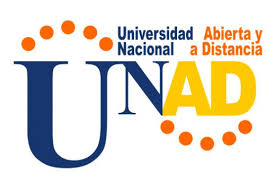

UNAD: Escuela de Ciencias Básicas Tecnología e Ingeniería - ECBTI
La Escuela de Ciencias Básicas, Tecnología e Ingeniería, tiene como misión contribuir a la educación para todos con programas en Ciencia, Tecnología e Ingeniería en la modalidad de educación a distancia, mediante la investigación, la proyección social, estrategias educativas y organizacionales innovadoras, con la utilización de las tecnologías de la información y las comunicaciones, para formar profesionales íntegros y de calidad, capaces de responder a las necesidades del entorno local, regional y global.
